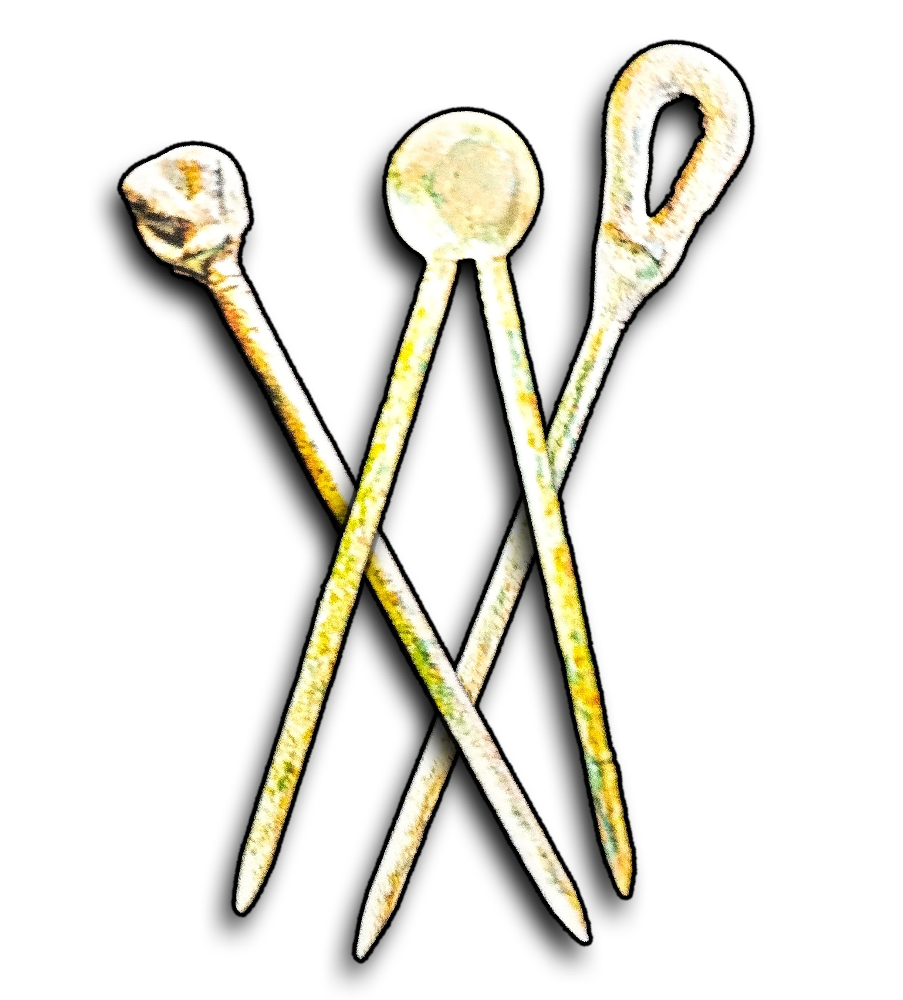
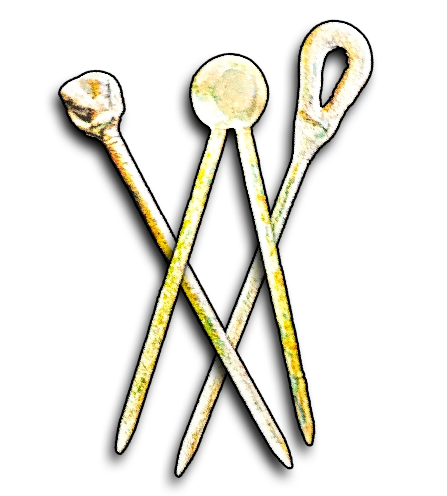
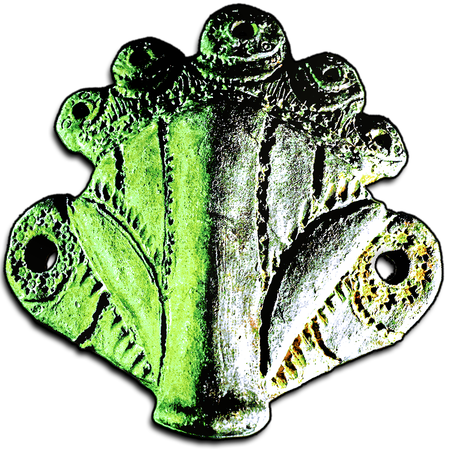
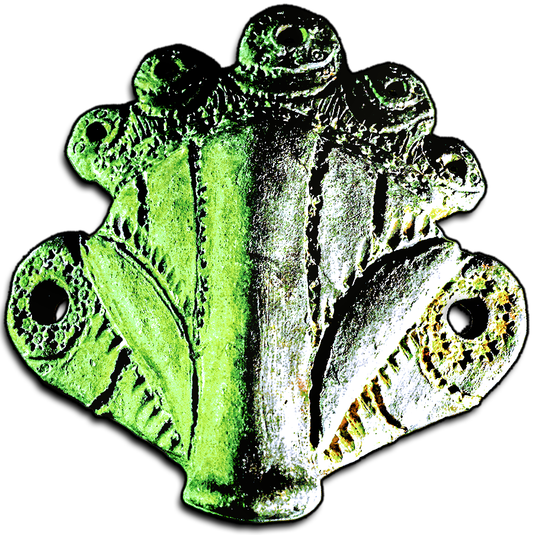
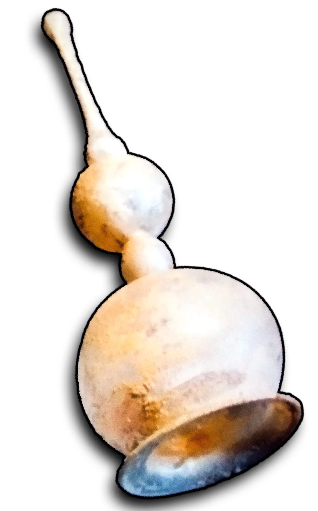
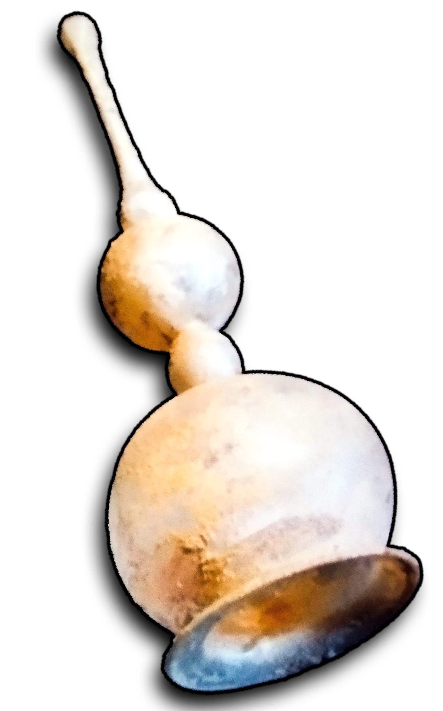

 

 


Vor 20 Jahren hat der Wiener Prähistoriker Univ.-Prof. Dr. Wolfgang Naugebauer zum ersten Mal zahlreiche Artefakte in Klosterneubur geborgen. Diese Artefakte gehören einer neolithischen Hochkultur im Donauraum an - der Vincá-Kultur. Überall im Donauraum kann man prähistorische Höhlenmalerei, mit bislang 200 identifizierten Zeichen - Der Donauschrift - die älteste bekannte Schrift des Planeten.